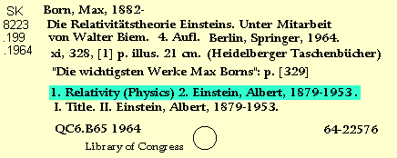

[Top]
-
Retrospective Conversions Procedural Outline
No Copy:
Subjects

Eliminate
the following subdivisions:
--Addressess, essays, lectures.
--Collections.
Go back to:
Notes
Continue with:
Holdings
[Top]
-
Retrospective Conversions Procedural Outline